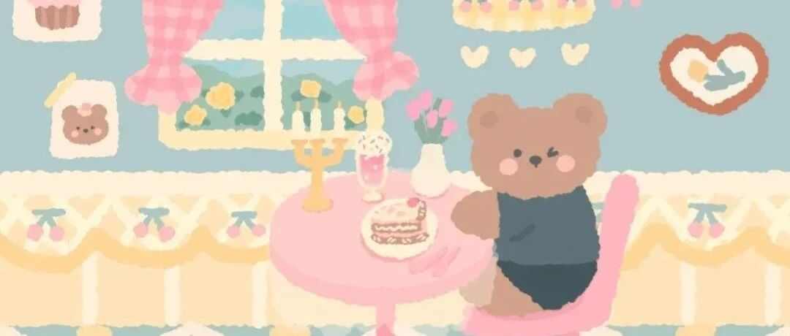

这个博主能处，有高效时间管理法她是真分享！
点击关注 秋秋很开心

🪐
大家好，我是秋秋呀～
我发现，很多人做管理时间都喜欢用下面这 2 种方式：
1.安排时间型
会把每个时间段、要做哪写事，都安排的很分明。
以前的我也是这种：
9-10点做计划
10-12点阅读
2-4点做读书笔记
可用了一段时间我发现，这种计划很容易产生整点效应和厌弃心理。
比如，不到10点整，我就不开始做事。一旦前面计划没完成，下面的事就很容易受影响。
根本坚持不下去每天执行。
2.安排事项型
后来我不做那种计划了，只把每天必须要做的事写下来，今天能完成就行。

可这种，不仅没有预估时间，还总有1-2件事每天完不成。
因为随机挑选去做意味着：先做喜欢的、简单的，没完成的只能留到明天。
✨
如果你也是上面2种，并且没有更好的时间管理方法。
那这篇文章真的超值！给大家介绍一个神人柳比歇夫的时间管理法。
柳比歇夫，前苏联科学家，一生完成了70多本著作。

涉猎很广，包括数学、农业、哲学、昆虫学、动物学等。
他收集有关跳蚤的标本，比动物研究所还要多5倍。
你以为他是一个工作狂？
实际上，他是一位充分享受人生的生活家。
他一年的娱乐活动有65次之多，包括看戏剧、电影，听音乐会、参观展览。
而他高效的秘诀，就在于记录时间。
✨
《卓有成效的管理》这本书里说，如果你想成为卓有成效的知识工作者，那一定要先学会管理时间。
而管理时间，最重要的是知道时间怎么浪费的。
柳比歇夫这个时间管理方法，就是记录时间。

（柳比歇夫的时间记录）
他会把每天把要做的事情记录下来，分成1级事件 基本工作、2级事件 社会工作、3级事件 附加工作。
每周、每月、每年再做一次统计分析。
通过对时间消耗的分析，他有了更深的洞察。
柳比歇夫发现自己平均每天有效的工作时间，大概4、5个小时。

这其中，包括1级2级3级所有工作时间。
这样看，想做很多事，不需要用很多的时间或多高效。
每天能做到4-5小时的有效工作时间，就足够了。
但柳比歇夫的过人之处在于，每天工作4-5小时，是天天如此，坚持56年从未间断。
而这种简单的记录，也有2个原则。
原则1：只记录对你来说有意义的事
原则2：只记录有效的时间
日常生活中有很多琐事，如果你觉得不重要，如玩手机这种，不需要记录。
而记录时间也要细致，应该是你全神贯注做这件事的时间。
✨
了解到这个方法之后，我也开始用最简单的excel表格，记录我每天的有效时间。
我是把事项project 分成了1.2.3，分别代表工作、学习、有意义的生活，以便统计分析。

通过19天的有效样本，分析之后：
我工作一共有38小时，写作和短视频时间持平，平均每天2小时。
学习上，运动、阅读占比较多，平均每天1小时以上，摄影学习时间较少。

靠，我每天有效的工作时间平均才2小时啊！（其实我每天都坐书桌前4-5小时的）
但这样，我一周也完成2篇文章+3条视频制作。也还是很厉害的！对自己的时间有了更深的了解了！
而接下来，我也有改进方向。
把每日有效工作时间增加到3小时、摄影学习占比加大。
再对每一天的时间进行分析：

我发现我一天有效的时间，只有5.5小时。
除去吃饭、睡觉基本的生理活动，每个人每天差不多都有10小时可以支配。
而我却只利用好了5个多小时（2小时工作、3小时学习生活），其他的时间真的都是玩手机不记得了。
✨
同样的一天，同样的人生几十年光景，柳比歇夫掌握的知识，受到的文化熏陶，获得的生命体验，真的比我们丰富得多。
而高效利用时间，不是先做计划。
是先去了解自己怎么使用的时间！
根据每一次的分析统计，再制定改进计划。
我以前从来不知道，我写一篇文章用2-3小时，做一条视频用3-4小时。这都是时间统计带给我的。
这个时间管理方法，真的很有效！大家实施2周就会有明显的感觉。
最后我还是要再提醒3点：
1、只记录你觉得有意义的事即可
2、一定要统计分析，这样才有意义
3、记录发生在事情完成后，以防忘事，待办清单每天可以用
还等什么？快去试试呀～
往期精彩内容：
作者介绍：
秋秋，95后自媒体女孩，极简生活、fire运动践行者。24岁裸辞、现在靠写作理财为生。希望能发现学习、成长、生活中的小美好，与你分享～

原创文章，转载请告知本人并标注来源
工作联系：17865514429 （微信）
请注明来意 :)
@小红书、抖音、快手：秋秋很开心
喜欢记得星标，让我们一起成长